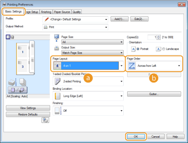

Printing Multiple Pages Onto One Sheet
 |
You can print multiple pages onto a single sheet. For example, you can print four or nine pages onto a single sheet by using [4 on 1] or [9 on 1]. Use this function if you want to save paper or to view your document in thumbnails.
|
|
|
|
To save more paper, combine this setting with 2-sided printing. Switching between 1-Sided and 2-Sided Printing
|
[Basic Settings] tab  In [Page Layout], select the number of page to print onto a single sheet In [Page Order], select the page distribution layout [OK]
In [Page Layout], select the number of page to print onto a single sheet In [Page Order], select the page distribution layout [OK]

 [Page Layout]
[Page Layout]
Select the number of pages to print onto a single sheet from [1 on 1] to [16 on 1]. For example, to print 16 pages onto a single sheet, select [16 on 1].

For options such as [Poster [2 x 2]], see Printing Posters.
Printing may not be performed properly if you combine this setting with an application setting for collating printouts.
 [Page Order]
[Page Order]
Select a page distribution layout. For example, if you select [Across from Left], the first page is printed on the top left, and then the rest of the pages are arranged rightward.